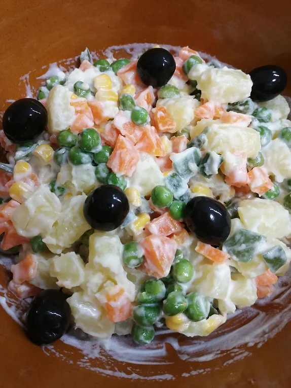

Salada Russa
Tempo de preparação
5min
Horas de Cozimento
10min
Tempo Total
15min
Porções
2

Ingredientes
- 2 batatas brancas grandes cortadas aos cubos
- 1 cenoura grande cortada aos cubos
- 5 vagens cortadas às tirinhas
- ervilhas congeladas a gosto
- 5 colheres de milho cozido de lata
- sal q.b
- maionese q.b
- 6 azeitonas pretas
Instruções
- Num tacho com água junte as batatas, a cenoura, as vagens e tempere com sal. Deixe cozer durante 10 min.
- Quando as batatas estiverem macias, escorra os vegetais e deixe arrefecer.
- Junte o milho lavado e escorrido e envolva a maionese na mistura. Coloque as azeitonas por cima e acompanhe com tofu ou mesmo assim, simples.